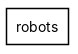
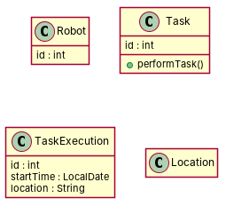

← all cases
D4/robots — model qwen, condition B, run 1
1. Requirements (input)
R1: This model represents robots in charge of performing tasks.
R2: There are robots that have an id.
R3: Robots can be of type cleaning robot and transport robot.
R4: Robots can perform tasks, which have an id.
R5: When a robot performs a task, the task execution is recorded.
R6: A task execution has an id, a start time and a location.
R7: The location can be either corridors or rooms.
2. Result 1 → Result 2 (ambiguity removal)
Red, struck-through: removed by ambiguity removal; green: added.
| classes (8 → 8) |
|---|
| CleaningRobot |
| Corridor |
| Location |
| Robot |
| Room |
| Task |
| TaskExecution |
| TransportRobot |
| attributes (3 → 3) |
|---|
| Robot.id |
| TaskExecution.id |
| Task.id |
| relations (6 → 6) |
|---|
| association: Robot -> Task |
| generalization: CleaningRobot -> Robot |
| generalization: Corridor -> Location |
| generalization: Room -> Location |
| generalization: TransportRobot -> Robot |
| has: TaskExecution -> Location |
3. Ambiguity tags
| id | req | type | cue | status | readings / explanation |
|---|
| A1 | R5 | referential | passive 'recorded' without agent | resolved | The task execution is recorded by the robot performing the task.; The task execution is recorded by an unspecified agent, possibly a system or another entity.
The phrase 'the task execution is recorded' could imply either the robot performing the task or an external system recording it. |
4. Diagrams generated from the shared model
usecase diagram
class diagram
5. Code skeleton (Python; Java in code/java/)
"""Code skeleton generated from the shared model of D4/robots.
Every class and method records the requirement(s) it traces to."""
from __future__ import annotations
import dataclasses as _dc
import enum as _enum
import typing as _t
@_dc.dataclass
class Robot:
"""Source: R1, R2"""
id: _t.Optional[int] = None
@_dc.dataclass
class Task:
"""Source: R4, R5"""
id: _t.Optional[int] = None
def performTask(self) -> None:
"""Operation."""
raise NotImplementedError
@_dc.dataclass
class TaskExecution:
"""Source: R5"""
id: _t.Optional[int] = None
startTime: _t.Optional[str] = None
location: _t.Optional[str] = None
@_dc.dataclass
class Location:
"""Source: R6, R7"""
pass
6. Validation, checks and traceability
| python_compiles | True |
|---|
| java_compiles | True |
|---|
| attribute_mismatches | 0 |
|---|
| method_mismatches | 0 |
|---|
| use_cases | 0 |
|---|
| use_cases_without_actor | 0 |
|---|
| use_cases_without_method | 0 |
|---|
| actors_without_use_case | 0 |
|---|
| relations_to_unknown_class | 0 |
|---|
| inconsistencies | 0 |
|---|
| inconsistency_rate | 0.0 |
|---|
| requirement_coverage | 0.8571 |
|---|
| validator fixes | |
|---|
| assumptions for open ambiguities | [] |
|---|
7. Scores against the reference
| element | P | R | F1 | TP/FP/FN |
|---|
| classes | 1.0 | 0.667 | 0.8 | 4/0/2 |
| attributes | 1.0 | 0.714 | 0.833 | 5/0/2 |
| relations | 0.0 | 0.0 | 0.0 | 0/0/4 |